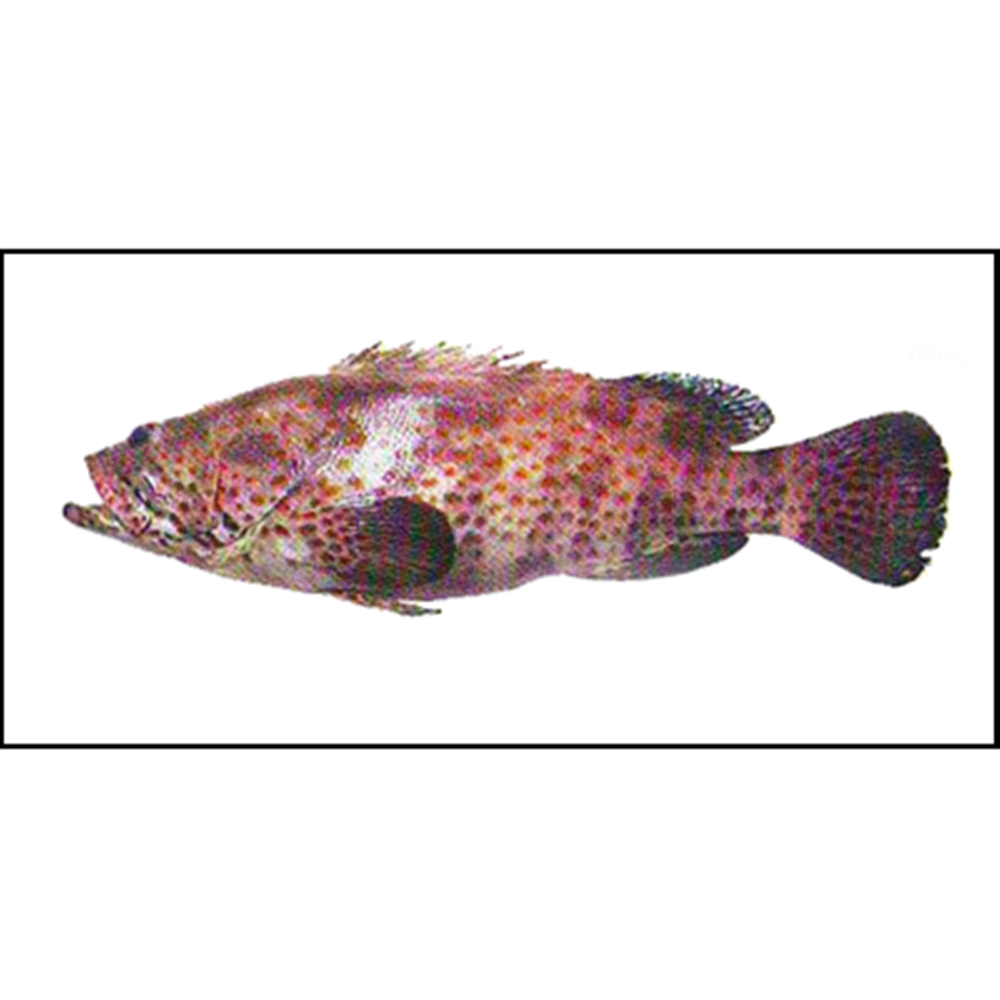

Ikan Kerapu Lumpur
Ikan kerapu lumpur adalah ikan yang termasuk dalam ikan migratory. Ikan tersebut merupakan ikan karang yang sering ditemukan di kawasan terumbu karang di daerah intertidal. Ikan kerapu lumpur (Epinephelus coioides) menggunakan terumbu karang didaerah intertidal karena faktor kondisisi biofisiknya cocok sebagai tempat memijah dan asuhan bagi perkembangan larvanya . Panjang ikan ini umumnya 50-70 cm, namun juga bisa mencapai 150 cm. Penangkapan ikan ini menggunakan alat tangkap seperti pancing, trawl, bubu dan rawai dasar. Persebaran ikan ini yaitu diseluruh perairan Indonesia terutama laut Jawa, bagian timur Sumatera, sepanjang pantai Kalimantan, Kalsel, Arafuru, ke utara sampai Teluk Benggala, Teluk Silam, Laut Cina Selatan sampai perairan tropis Australia. Ikan ini dipasarkan dalam bentuk segar, asin-kering dengan harga sedang.
Kandungan Ikan Kerapu Lumpur
| Protein (%) | Kalori (Kal) | Lemak (%) | Besi (mg) | Kalsium (mg) | Fosfor (mg) | Vit A (SI) | Vit B1 (mg) | Air (%) | BDD (%) |
|---|---|---|---|---|---|---|---|---|---|
| 32,4 | - | 1,2 | 6 | 320 | 343 | - | 0,01 | - | - |
Manfaat Ikan Kerapu Lumpur
- Lemak Ikan Kerapu dapat Meningkatkan Fungsi Otak Hingga Maksimal Sehingga Kecerdasan Meningkat
- Kombinasi DHA+EPA Berperan dalam Menurunkan Kadar Trigliserida dalam Darah
- Khasiat Ikan Kerapu Menghindarkan dari Resiko Penyakit Kardiovaskuler
- Manfaat Ikan Kerapu Mengurangi Resiko Keracunan Pada Pasien Pasca Operasi
- Manfaat Ikan Kerapu Mengurangi Kadar Kolesterol (Lemak Jahat LDL)
- Mengurangi Derita Sakit Depresi
- Mengurangi Rasa Nyeri Karena Angina Pectoris
Asam Amino Esensial dari Omega 3 dan Omega 6 bermanfaat untuk meningkatkan aktivitas syaraf otak sehingga otak mengalami peningkatan kecerdasan. Konon semakin banyak kerutan di otak dan semakin besar massa dari otak, maka manusia akan semakin cerdas. Dan inilah fungsi dari Kerapu, dapat memberikan impuls atau rangsangan agar otak teraliri energi sehingga lebih aktif mengembangkan dirinya. Ikan Kerapu sangat bagus dimakan oleh segala usia, terutama balita dan lansia, agar daya ingat mereka terjaga dan meningkat. Kinerja otak dalam proses berpikir, bergerak, dan segalanya benar-benar akan naik. Tak ada salahnya makan kerapu.
DHA dan EPA adalah dua zat ajaib yang amat dibutuhkan manusia. Zat ini memiliki manfaat yang kompleks banyaknya. Salah satunya adalah menurunkan kadar Trigliserida dalam darah. Trigliserida adalah lemak yang diproduksi tubuh karena adanya akumulasi glukosa dalam aliran darah. Sehingga lemak ini menempel di dinding pembuluh darah bila sampai berlebihan. Trigliserida juga dapat membuat seseorang menjadi bugar bila jumlahnya normal.
Penyakit Kardiovaskuler adalah penyakit jantung. Siapapun dapat mengalami gangguan jantung ini. Yang paling umum dari gangguan ini adalah serangan jantung, jantung koroner, dan gangguan klep jantung. Dengan makan Ikan kerapu, anda akan terhindari dari resiko penyakit jantung ini karena ikan ini dapat membantu jantung agar mampu memompa darah dengan lancar tanpa hambatan.
Pasien pasca operasi maksudnya adalah pasien yang baru saja mendapatkan operasi besar yang memerlukan pembedahan besar sehingga tubuh harus dibius. Pasien yang habis melakukan operasi rentan mengalami keracunan karena tubuhnya kan habis dibedah. Luka pada jahitannya juga rencan mengalami infeksi bila tidak dirawat dengan baik. Dengan makan Ikan Kerapu, luka bekas operasi bisa cepat sembuh.
Khasiat Ikan Kerapu ternyata juga dapat mengurangi kadar kolesterol dalam darah. Lemak jahat LDL bakalan diberantas habis dengan aneka macam lemak tak jenuh yang terkandung dalam daging kerapu. Anda yang memiliki penyakit kolesterol, jangan pernah takut makan ikan ini, karena benar-benar aman. Tinggal anda bijaksana saja dalan memakannya jangan berebihan. Karena segala sesuatu yang berlebihan tidaklah baik.
Depresi adalah penyakit mental yang sangat menyakitkan karena membuat tubuh mengalami rasa sakit akibat psikosomatis. Depresi membuat hidup seseorang jadi tidak produktif lagi. Maka dari itu, diperlukan obat depresi yang ampuh demi meningkatkan kualitas hidup. Manfaat Ikan Kerapu ternyata bisa digunakan untuk mengobati depresi.
Angina Pectoris adalah penyakit yang menyerang dada. Di mana organ dada mengalami rasa nyeri seperti tertusuk benda tajam dan tertimpa benda berat. Angina disebabkan karena gangguan organ dada seperti jantung dan paru-paru. Namun Angina juga bisa disebabkan karena naiknya asam lambung ke kerongkongan yang dikenal sebagai penyakit GERD. Ikan Kerapu dapat mengurangi nyeri karena Angina.